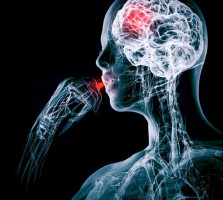

He creído en cosas inexistentes pero no me parece haber conocido la fe. Mis creencias religiosas siempre se asemejaron a esa sensación de tener esperanzas sobre cosas futuras… o de miedo. En el mundo imaginario y caótico en el que crecí, donde monstruos controlaban eternos lugares “malditos”, dioses generosos con ideas mucho más crueles e irracionales manejaban el universo y muertos podían aparecer en cualquier momento y lugar, el misterio en la ficción parecía un juego.
Es difícil entender por qué creemos tantas tonterías y absurdos, especialmente ahora, cuando evidencias en su contra aparecen por todos lados. ¿Cómo es posible ser una especie capaz de sacar una nave del Sistema Solar y al mismo tiempo pagar por una escoba bendecida para barrer los problemas fuera de casa como por arte de magia? Ambas cosas no parecen salir del mismo cerebro.
No obstante, aunque compartimos el cerebro de una misma especie, no todos los cerebros humanos son iguales. Y no tenemos que ir lejos para explicarlo, tanto la experiencia como la neurociencia hoy lo conocen bien. La evolución del cerebro viene controlada por genes, tu ARN y ADN, a su vez, son el fruto de la interacción de dos individuos y los vínculos que el individuo haga con su medio también dejarán huellas en las neuronas resultantes. Es toda una danza que ha venido ocurriendo en el planeta desde que comenzara la vida, hoy se piensa que hace unos 3,600 millones de años, como simples células procariotas.
Hemos hablado aquí sobre las creencias como una forma de explicar ignorancias, las creencias como una enseñanza estampada desde la niñez, las creencias como el resultado de la violencia y la cultura, las creencias como enjutas de circuitos biológicos necesarios en la evolución; ciertamente, todas son características reales que infunden las creencias religiosas en nuestros días.
No obstante, ¿qué sabemos realmente de la fe? ¿Qué ocurre cuando ya has explicado enigmas con suficientes evidencias? ¿Qué pasa cuando el niño crece y tiene la suficiente libertad y el conocimiento necesario para no creer? ¿Cómo es que continúan existiendo creyentes en lugares pacíficos? ¿Cómo puede una persona aceptar un completo absurdo junto a teorías lógicas que lo erradican completamente?
Es aquí donde entra la fe. La veo como un sustrato firme de todas esas características que he mencionado antes, sin embargo y a la misma vez, ha conseguido mantenerse altiva y muchos la ondean hoy como su bandera religiosa, el salvavidas que les impide ahogarse en un océano de demostrados hechos extraordinarios y fascinantes. Algunas de estas personas han conseguido mantener ambas cosas gracias a la creencia exaltada en sus dioses junto a la aceptación de los logros científicos, esos mismos que pueden eliminar sus mitos.
Busquemos una definición primero.
La Real Academia da muchas, por supuesto, todas las palabras que utilizamos toman varias interpretaciones de acuerdo al uso que le demos. La fe, por ejemplo, trata sobre las creencias dentro de las distintas religiones, también habla de confianza, seguridad, aseveración de que algo es cierto, no sólo para un individuo sino para toda una comunidad. Un amigo teólogo me dijo una vez que la fe no necesita evidencias, no necesita explicación, es algo que has decidido aceptar. Lo malo es cerrar tus ojos a la realidad y asirte sólo a tu fe; “tienes que tener mucha más fe en Dios para permitir que eso no te ocurra, creer con certeza que, en algún momento, Él te explicará el por qué”, me dijo.
‘Ah, un comodín’, pensé.
Como Rick Heller, también he visitado altares repletos de muletas y hasta sillas de ruedas, que son presentados como evidencia irrefutable de que la fe sana. Igualmente suelen recordarme, sin embargo, las palabras del escritor Anatole France: “Una sola pierna de madera diría más que todo eso”. Y es que realmente me parece que las pruebas son demasiado leves e incompletas, las explicaciones absurdas, las afirmaciones increíbles; de hecho, las creencias religiosas verdaderamente requieren de fe.
“¿Están siendo engañados esos que buscan la fe sanadora? Pues no del todo. Aunque ninguna cantidad de fe puede regenerar una extremidad perdida, la fe sí puede ayudar a una persona a superar el dolor paralizante. Existe una mayor comprensión hoy de que mecanismos naturales del cerebro permiten que esto ocurra. Creer en un Poder Superior, incluso uno ficticio, puede ayudar a curar males igual como lo hace la respuesta placebo. Sin embargo, con el enfoque correcto, incluso los escépticos pueden aprovechar los mecanismos placebo”, escribió Heller, periodista en Boston Globe y Free Inquiry, entre otros, de la Universidad de Boston y editor de la revista Nuevo Humanismo.
¿Estamos entonces frente a la verdadera apuesta de Pascal, tener fe aunque sólo sea como placebo? ¿Estaríamos mejor eligiendo un dios, cualquiera, y adorándolo con fe? ¿Cómo tener fe en algo en lo que no crees? ¿Cómo beneficiarte del placebo si sabes que la pastillita es sólo azúcar?
El efecto placebo está bien establecido aunque no sea completamente entendido. Y si una cosa sabemos bien, no hay forma de controlarlo. De hecho, se habla hasta de su némesis, el efecto nocebo, que no te permite disfrutar de la sanación natural y hasta puede dañarte. Más aún, algunas investigaciones aseguran que la información que los doctores dan a los pacientes cuando recetan medicamentos puede tener grandes efectos sobre cómo se sienten los pacientes después del tratamiento. Otras evidencias sugieren que un mensaje positivo, junto con el ritual de tomar píldoras, puede influenciar la efectividad del cuidado médico.
“El tratamiento con placebo, que fue etiquetado erróneamente como rizatriptan, redujo la severidad del dolor de cabeza tan efectivamente como el rizatriptan que fue etiquetado erróneamente como placebo. Más aún, cuando el tratamiento de placebo fue honestamente etiquetado como un placebo, los pacientes reportaron menos dolor en comparación con ningún tratamiento. Es bastante claro que algo estaba sucediendo. Le dijimos a la gente que les estábamos pidiendo que ayudaran a la ciencia. No les dijimos que esperaran nada en términos de sentirse mejor,” dijo Ted Kaptchuck, autor principal de una de estas investigaciones, específica para la migraña.
Precisamente, junto con el investigador Slavenka Kam-Hansen, encontraron que puede haber una especie de “conocimiento personificado” o “memoria corporal” que inicia cambios neurobiológicos aún cuando los pacientes saben que una píldora no es medicamento real. Los hallazgos sugieren que el contexto importa cuando se receta y la información positiva podría ser una poderosa medicina, al menos cuando se trata de migrañas.
Para muchos, la fe es una patada al pesimismo y al efecto nocebo, puede ayudarte la deposites en un Dios o en un Cirujano.
El problema es que no puedes tener fe ‘ciega’ en cualquier cirujano. Debes investigar antes de permitir que te duerma y navegue por tu cuerpo con un bisturí, deseas saber que lo ha hecho antes con resultados positivos; aún así, muchos terminan agradeciendo a su dios luego de elegir el mejor cirujano. El placebo camina por conexiones todavía enigmáticas por el cerebro, la fe domina los caminos misteriosos de lo sobrenatural, aventajándose de estas conexiones.
¿Es recomendable, entonces, tener fe en el efecto placebo?
“No intento reducir el bálsamo de la religión únicamente a la respuesta al placebo. Por ejemplo, las ideas de que ‘las cosas suceden por una razón’ o que las tragedias son ‘la voluntad de Dios’ son formas de reevaluación cognitiva. Cuando reevaluamos, áreas prefrontales del cerebro inhiben la actividad relacionada con el dolor en la corteza cingulada. La meditación y la atención plena se están estudiando en los laboratorios como formas de reducir el sufrimiento. Incluso el arte religioso y la música que inspira, junto a las versiones seculares de la misma, pueden reducir el dolor”, añadió Heller.

Ciertamente, neurocientíficos como Sam Harris, Michael Persinger, Oliver Sacks y Steven Pinker, han estado estudiando los distintos efectos placebos que se originan con actividades como la meditación, la música, la oración y otras formas hasta más ‘espirituales’ de creer en algo.
En el mundo del ateísmo, entonces, ¿queda todo en la actitud?
Si tu mensaje es positivo, a lo mejor ocurre la sanación, si es negativo, quizá te atrape el nocebo. ¿Será eso otra forma de ‘respeto’ hacia las creencias en delirios? ¿Una justificación, quizá?
Cuando buscamos una explicación, por lo general, encontraremos muchas.
En mi opinión, no necesito tener fe, lo que no quiere decir que no me alegre que a otros le sirva de placebo, tampoco significa que desconfíe de todo; no todos usamos el mismo tamaño de pantalón ni nos movemos al mismo ritmo, de hecho, y como se ha dicho por los siglos de los siglos, todos descartamos otros dioses y creencias; los ateos sólo hemos decidido descartarlos a todos. Y, si eres escéptica, como yo, más que dioses, has decidido descartar ridiculeces y sinsentidos en general. Bien por ti… y que el efecto placebo te acompañe, reces o no. Ramén.
“El uso juicioso del escepticismo puede curarnos también”
¿Es posible tener fe en la ciencia?
Creo que la fe religiosa existe para afirmar dogmas, creer en lo imposible, invisible y poderoso a pesar de la ausencia de evidencias. Por el contrario, no tener fe en dogmas es un requerimiento en la ciencia. Una vez pensé, por ejemplo, que sólo soñábamos en las fases MOR (REM, en inglés) de nuestro tiempo dormidos, pero ya descubrieron que no es así. ¿Debo tener fe en lo que una vez creí a pesar de que los resultados hoy me dicen que no es como se pensaba? Eso es imposible ya que el progreso está basado en cambios positivos específicos.
Curiosamente, sin embargo, los religiosos también ignoran dogmas, desechan o interpretan de forma distinta muchas afirmaciones de sus libros sagrados por ser extremadamente ridículas. De hecho, el otro día veía un video compartido en Facebook por el ingeniero Hernán Toro, donde un líder musulmán explicaba todo el sexo que tendrán los hijos de Alá cuando lleguen al cielo. Numerosas vírgenes de ojos negros estarán esperándolos con el único motivo de tener sexo con ellos, imagino que estas vírgenes han sido creadas en el cielo ya que no han existido en el planeta tantas vírgenes de ojos negros, musulmanas y esclavas del sexo eterno para estos hombres muertos. Más allá de estas vírgenes, también hay “sirvientas” que estarán esperándolos sólo para eso. El mismo líder exclama sonriente, “¡Que Dios los ayude!”, ya que la eternidad para todas estas almas machos, es tener sexo con vírgenes y sirvientas. No sé que qué órganos sexuales lo harán, aparentemente, las almas musulmanas vienen con sus propias vaginas y penes.
Los cristianos tampoco van muy lejos con sus delirios. Con más de 40,000 sectas o denominaciones, cada una manejando sus propias quimeras todas extraídas de un solo libro, pues se requiere más que el efecto placebo para explicar esa fe, o cada una de ellas. Como dijo el otro día mi esposo: “Existen delirios sin religiones pero no hay religión sin delirio”.
“La resistencia de la religión en la edad moderna puede tener algo que ver con sus propiedades analgésicas. Los que somos demasiado escépticos para recurrir a la curación por fe, al menos, podemos derrumbar nuestros nocebos. Podemos aplicar el escepticismo hacia nuestro propio cuerpo y desafiar las creencias falsas que nos causan dolor. Nocebos pueden ocurrirle a cualquiera. Después de todo, ¿quién no tiene creencias falsas? De hecho, la gente que está segura de que todas sus creencias son verdaderas pueden ser los más ilusos. La fe puede hacer milagros por medio del sistema de recompensa del cerebro”, escribió Heller. “El uso juicioso del escepticismo, cuando se aplica a temores injustificados y a pesimismo excesivo, puede curarnos también”.
Volver al índice de la Lupa Herética
© 2008-2021 Glenys Álvarez y Sin Dioses. Prohibida la reproducción con fines comerciales.
Comentarios
Comments powered by Disqus